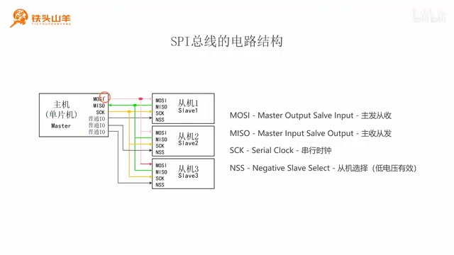
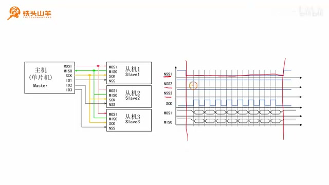
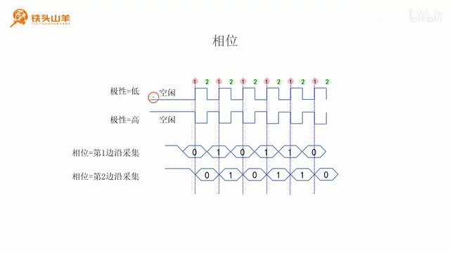
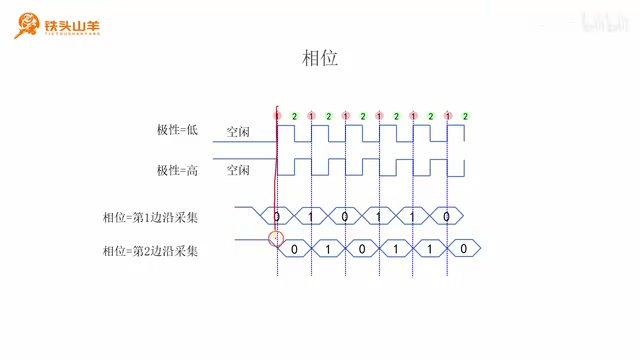
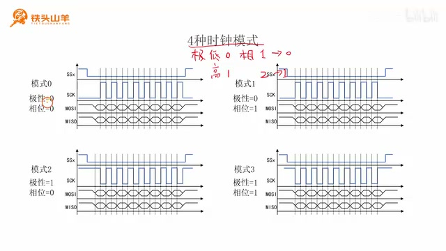
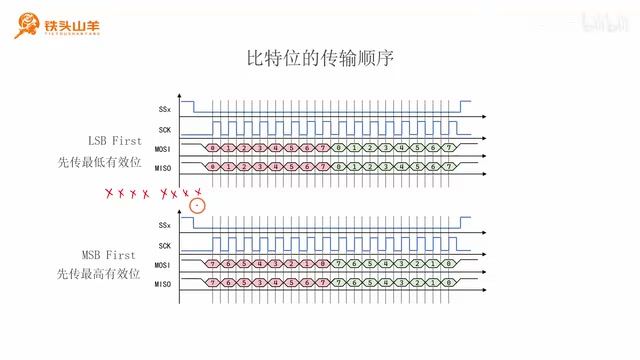
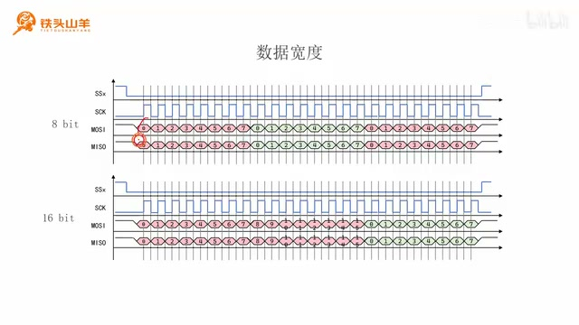

P025 · 5.1 （SPI）电路结构和通信协议¶
各位同学大家好，我是铁头山羊。从今天开始，我们开始学习新的一章，也就是第五章。回忆一下，之前我们已经学习过两种通信接口，分别是串口和 I²C 接口。本章我们来学习一种新的通信接口，也就是 SPI 总线。首先通过第 5.1 节来看一下 SPI 总线的电路结构和通信协议。
本套视频所需要的所有材料都包含在这个开发套件包里，大家可以扫描屏幕上的二维码，进入我们的淘宝店铺购买。购买套件之后，你将获得课程所有的课件和源码，还能加入答疑群，和 UP 主直接交流。
本期视频分成以下六个部分来讲。第一部分介绍 SPI 总线整体的电路结构；第二部分介绍 SPI 总线通信的流程以及波形图；第三、第五、第六部分分别介绍 SPI 总线的三种参数：时钟信号的极性和相位、传输顺序以及数据宽度。下面从第一部分开始，介绍 SPI 总线的电路结构。
SPI 总线的电路结构¶
SPI 是一种总线结构，也就意味着总线上可以实现多个设备之间的通信。SPI 总线上只有一个主机（Master），还可以有多个从机（Slave）。一般把单片机作为 SPI 总线的主机。
SPI 总线有这么几个引脚：MOSI、MISO、SCK 以及 NSS。下面分别介绍这些引脚的作用和用法。

SPI 总线连接示意图：一个主机与多个从机共用 MOSI、MISO 和 SCK，并分别连接从机选择线。 · 原片 01:38
首先看 MOSI。
MOSI 这四个字母是四个英文单词的缩写，分别是 Master Output、Slave Input。其中 Master 代表主机，Slave 代表从机，Output 是输出，Input 是输入，所以连起来的意思就是“主发从收”。主机和从机都有 MOSI 引脚：主机的 MOSI 是输出引脚，也就是主机发送；从机的 MOSI 对它来说是接收引脚，会接收主机发来的数据。实际接线时，只要把主机的 MOSI 和所有从机的 MOSI 连接在一起就可以了。
看完 MOSI，再看第二种引脚 MISO。MISO 和 MOSI 正好相反，它是 Master Input、Slave Output 的缩写，代表“主收从发”：主机通过这个引脚接收数据，从机通过这个引脚向外发送数据。因此接线时，把主机的 MISO 和所有从机的 MISO 连接在一起，这样从机就可以向主机发送数据了。
第三种引脚叫 SCK，是 Serial Clock 的缩写，也就是串行时钟。从名字可以看出来，这个引脚传输的是时钟信号。主机和从机都有 SCK 引脚，接线时把它们都连起来。这样由主机产生时钟信号，从机接收时钟信号；通过这个时钟信号可以控制通信的快慢。
最后一种引脚叫 NSS，是 Negative Slave Select 的缩写。
Negative 表示负的，这里表达的含义是低电压有效；Slave 代表从机，Select 代表选择。所以 NSS 的意思是低电压有效的从机选择引脚。主机通过向 NSS 引脚发送低电压，来选择要和它通信的从机。
接线时，在主机上选择一个普通的 IO 引脚，然后与从机的 NSS 连接。每一个从机都要占用这么一个 IO 引脚，也就是要多这么一根线。比如主机想和从机一通信，就通过这个 IO 引脚输出低电压；其他两个从机的 NSS 都输入高电压。因为低电压表示选中，这时只有从机一和主机通信，也就是选中了从机一。
刚才简单了解了 SPI 总线的电路结构。下面通过第二部分来看 SPI 总线的通信流程以及对应的波形图。
SPI 总线通信流程与波形¶
SPI 总线通信的流程是这样的：如果主机想和某一个从机建立通信，就通过 IO 引脚向这个从机的 NSS 输出低电压，向其他从机的 NSS 输出高电压。这样只有一个从机被选中，然后主机就可以和这个从机通信。比如看右边这张图，NSS1、NSS2 和 NSS3 分别代表从机一、从机二和从机三的 NSS 引脚。想和从机一通信时，就向 NSS1 输出低电压，而向剩下的 NSS2、NSS3 发送高电压。这样只有从机一被选中。

主机选择从机一时，NSS1 拉低，NSS2 与 NSS3 保持高电平；下方同时示出时钟和数据线。 · 原片 05:50
通信时，主机通过 SCK 引脚向从机发送时钟信号，这个时钟信号就是高低变化的电压，它控制通信速度。
时钟信号的频率越高，通信速度越快。每一个时钟周期，会在 MOSI 和 MISO 上各传输一个比特位。这个比特位就是低电压表示 0，高电压表示 1。其中 MOSI 是主发从收，也就是说主机通过 MOSI 发送数据给从机；MISO 是主收从发，也就是说从机通过这条线向主机发送数据。主机在发送一个比特位的同时，从机也会向主机返回一个比特位。也就是说，主机发送了多少数据，就会相应地从从机收到多少个比特位的数据。这也是 SPI 总线通信的一个特点。
以上就是 SPI 总线通信的整个流程。了解了 SPI 总线通信的流程之后，下面我们来学习 SPI 总线的三种不同参数：时钟信号的极性和相位、比特位的传输顺序以及数据的宽度。首先从时钟信号的极性和相位开始。
参数一：时钟信号的极性和相位¶
先看第一个概念：极性。SPI 总线有两种不同的极性，分别是低极性和高极性。它们是什么意思呢？在 SPI 总线不进行通信的时候，也就是图中两边的空闲状态，如果 SCK 时钟线上的电压是低电压，那么这就是低极性。

极性与相位示意图：空闲时钟电平为低或高的两种波形，以及接收方在第一边沿或第二边沿采集数据的对应示意。 · 原片 08:13
大家来看，这里都是低电压，这就是低极性。如果在空闲状态下时钟信号的电压是高电压，这就是高极性。根据高、低极性，时钟信号的形状完全相反。
看完极性的含义，再看相位。在解释相位之前，先解释第一边沿和第二边沿这两个概念。图中的上方波形代表极性为低的时钟信号，空闲状态下是低电压；下方波形代表极性为高的时钟信号，空闲状态下是高电压。空闲状态之后第一个出现的边沿叫第一边沿，第二个出现的边沿叫第二边沿。
所以，对于极性等于 0 的时钟信号，第一边沿是上升沿，所有这些上升沿都叫第一边沿，下降沿叫第二边沿。而对于高极性的时钟信号正好相反：第一个出现的是下降沿，所以所有下降沿叫第一边沿，上升沿叫第二边沿。两者正好相反。

相位示意图对比接收方在第一边沿或第二边沿采集数据的时刻。 · 原片 10:02
有了第一边沿和第二边沿的概念之后，就可以介绍两种相位：第一边沿采集和第二边沿采集。注意观察数据线上的信号，也就是 MOSI 或 MISO 上传输的数据：低电压表示 0，高电压表示 1。每一个比特位的传输都可以分成两个阶段。第一个阶段是发送方准备数据的阶段；第二个阶段是接收方采集数据的阶段。
在第一个阶段中，电压允许变化，也就是发送方可以改变数据线上的电压；到了第二个阶段，电压就不允许变化，由接收方采集数据。根据采集数据的时间点，可以划分出两种相位。上面的波形是在第一边沿由接收方采集数据，所以相位叫第一边沿采集。
而下面的波形正好相反，是在时钟信号的第二边沿由接收方采集数据，所以叫第二边沿采集。这就是第一边沿采集和第二边沿采集两种相位的概念。
SPI 的四种时钟模式¶
下面学习本期视频的第四部分：SPI 的四种模式。刚才已经学习了时钟信号的极性和相位。时钟信号有两种极性，分别是低极性和高极性，把低极性记作 0，把高极性记作 1。相位有第一边沿采集和第二边沿采集，把第一边沿采集记作 0，把第二边沿采集记作 1。由此就可以组合出四种时钟模式。

四种 SPI 时钟模式按极性与相位组合排列，分别对应模式 0、1、2、3。 · 原片 10:55
比如，极性是低极性、相位是第一边沿采集，对应的两个数字就是二进制的 00；转换成十进制是 0，所以是模式 0。如果极性是低极性、相位是第二边沿采集，那么两个数字是二进制的 01，对应十进制 1，所以是模式 1。如果极性是高极性、相位是第一边沿采集，那么二进制数是 10，对应十进制 2，所以是模式 2。如果极性是高极性、相位也是第二边沿采集，那么对应的二进制数是 11，转换成十进制就是 3，所以是模式 3。这样就得到时钟信号的四种模式。
参数二：比特位的传输顺序¶
看完时钟信号的极性和相位以及 SPI 的四种时钟模式之后，再学习第二个参数：比特位的传输顺序。SPI 总线的比特位传输顺序有两种，分别是 LSB First 和 MSB First。先看 LSB First。LSB First 是 Least Significant Bit First 的缩写，代表先传最低有效位。MSB First 代表 Most Significant Bit First，也就是先传最高有效位。
什么是最低有效位和最高有效位呢？比如一个字节由八个比特位组成，最右边是比特 0，然后是 1、2、3、4、5、6、7。比特 0 的权重最小，是 2 的 0 次方；比特 7 的权重最高，是 2 的 7 次方。所以比特 0 是最低有效位，比特 7 是最高有效位。

LSB First 从比特 0 开始传输，MSB First 从比特 7 开始传输。 · 原片 12:25
比如使用 SPI 总线以字节为单位传输数据，如果选择 LSB First，也就是先传最低有效位，先传比特 0，然后紧接着传第 1 位、第 2 位，最后传第 7 位。如果选择 MSB First，就正好相反：先传最高有效位，也就是比特 7，所以传输顺序是 7、6、5、4、3、2、1、0。
参数三：数据宽度¶

数据宽度波形对比每 8 个比特和每 16 个比特分成一组传输。 · 原片 13:29
最后一个参数是数据宽度。数据宽度的概念就是 SPI 总线每次传输的比特位个数。数据宽度有两种选项，分别是 8 比特和 16 比特。所谓 8 比特，就是 SPI 每次传输 8 个比特，也就是一个字节的数据。比如右边的波形，每 8 个比特位传一组，每 8 个比特位传一组。
而 16 比特就是每次传输 16 个比特位。大家看右边的图，每 16 个比特位传一组，每 16 个比特位传一组。所以这就是数据宽度的概念，这个概念挺好理解的。
好的，以上就是本期视频的全部内容。通过本期视频，我们学习了 SPI 总线基本的电路结构以及通信流程，还学习了三种不同的参数以及 SPI 的四种模式。内容还是比较多的，但是这些知识点都是学习 SPI 的基础。大家一定要先理解这些知识点之后再学后边的内容；如果这些知识点没有掌握，千万不要急着往后学。感谢大家的收看，让我们下期视频再见。